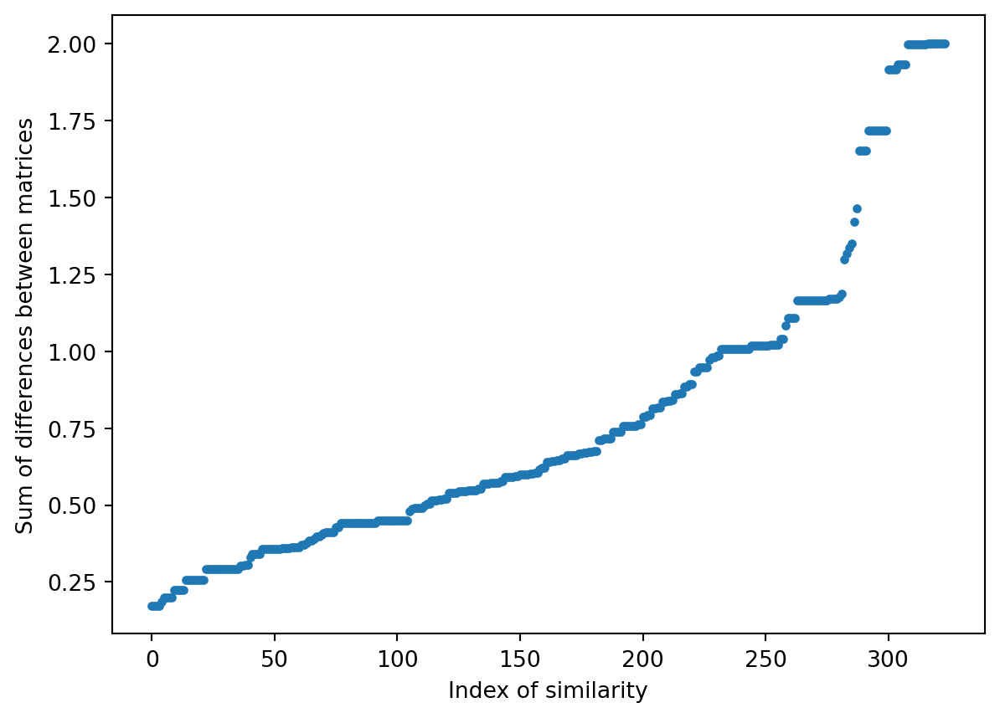

Due to the timing issues, we continue with the plan of comparing kernels. For a simple analysis we look at the first layer of each model and output all of it’s kernels and compare for the different models based on differing sizes of dataset.
(a) 250 snapshots trained model, kernel [0,0]
(b) 250 snapshots trained model, kernel [0,1]
(c) 250 snapshots trained model, kernel [0,2]
(d) 500 snapshots trained model, kernel [0,0]
(e) 500 snapshots trained model, kernel [0,1]
(f) 500 snapshots trained model, kernel [0,2]
(g) 750 snapshots trained model, kernel [0,0]
(h) 750 snapshots trained model, kernel [0,1]
(i) 750 snapshots trained model, kernel [0,2]
(j) 1000 snapshots trained model, kernel [0,0]
(k) 1000 snapshots trained model, kernel [0,1]
(l) 1000 snapshots trained model, kernel [0,2]
(m) 1250 snapshots trained model, kernel [0,0]
(n) 1250 snapshots trained model, kernel [0,1]
(o) 1250 snapshots trained model, kernel [0,2]
Figure 1: Comparison of the first layer of kernels for each model trained on different amounts of data.
Week 4
The work from week 3 to 4 was to use a datset of image filter matrices and compare them to the kernels generated by our model to see if the neural network had learned the filtes without their input. This would show the model to be doing edge analysis for example if it predominantly used edge analysis filters. To do this, edge_filter.ipynb was crated and contains the relevant code to perform this. At this point a few kernels and filters appeared relatively similar but with a few key differences such as one matrix element much larger than in the filter.
Code
import tensorflow as tfimport matplotlib.pyplot as pltimport numpy as npfrom skimage import filtersfrom sklearn.preprocessing import normalize name ="week1/0.1_full"model = tf.keras.models.load_model(f'../models/{name}.keras')kernels, biases = model.layers[0].get_weights()# Get filtersI = np.zeros((3,3))I[1,1] =1my_filter_dict = {}plot =Falsefor f indir(filters):if f !="try_all_threshold": # This one causes some to be drawn and just calls the other thresholds which are already checkedtry:filter=eval(f"filters.{f}(I)")iffilter.shape == (3,3): my_filter_dict[f] =filterif plot: plt.matshow(filter) plt.title(f) plt.figure()exceptExceptionas e:# print(f,"with exception", e) f =0# Normalise matricesnormalised_kernels = np.copy(kernels)normalised_filters = my_filter_dict.copy()index =0for kernel in normalised_kernels: kernel = (kernel - kernel.min()) kernel = kernel/kernel.max() kernel /= kernel.sum() normalised_kernels[index] = kernel index +=1index =0filter_keys =list(normalised_filters.keys())forfilterin normalised_filters.values(): filter_key = filter_keys[index]filter= (filter-filter.min())# Some filters have all the same value so doing this causes divide by zero error, instead set all to 1.if (filter.max() ==filter.min()):filter.fill(1)else:filter=filter/filter.max()filter/=filter.sum() normalised_filters[filter_key] =filter index +=1## Compare Matrices:differences_dict = {}kernel_index =0for kernel in normalised_kernels: kernel = kernel.squeeze() filter_index =0forfilterin normalised_filters.values(): filter_key =list(my_filter_dict.keys())[filter_index]for roll inrange(0,4): # All 4 rotationssum= np.sum(np.abs(kernel -filter)) differences_dict[f"kernel-{kernel_index},filter-{filter_key},roll-{roll}"] = (sum) kernel = np.array(list(zip(*kernel))[::-1]) filter_index +=1 kernel_index +=1# sort by valuesorted_differences_dict = {k: v for k, v insorted(differences_dict.items(), key=lambda item: item[1])} plt.plot(sorted_differences_dict.values(),'.')plt.xlabel("Index of similarity")plt.ylabel("Sum of differences between matrices")
/Users/japlin/.pyenv/versions/3.12.4/lib/python3.12/site-packages/skimage/filters/_gabor.py:88: RuntimeWarning:
divide by zero encountered in divide
/Users/japlin/.pyenv/versions/3.12.4/lib/python3.12/site-packages/skimage/filters/_gabor.py:90: RuntimeWarning:
divide by zero encountered in divide
/Users/japlin/.pyenv/versions/3.12.4/lib/python3.12/site-packages/skimage/filters/_gabor.py:97: RuntimeWarning:
invalid value encountered in multiply
Text(0, 0.5, 'Sum of differences between matrices')

The values on the lowest end are the kernels and filters have the closest values to.
Code
closest_key =list(sorted_differences_dict.keys())[0]closest_value = sorted_differences_dict[closest_key]print("Closest Key is "+str(closest_key) +" with a total difference of "+str(closest_value))kernel = normalised_kernels[0].squeeze()plt.matshow(kernel, cmap="binary")plt.colorbar()plt.matshow(normalised_filters['farid'], cmap='binary')plt.colorbar()
Closest Key is kernel-0,filter-farid,roll-0 with a total difference of 0.1728232986221629
However, also of interest is the values that are furthest from each other as shown here:
Code
furthest_key =list(sorted_differences_dict.keys())[-1]furthest_value = sorted_differences_dict[furthest_key]print("Furthest Key is "+str(furthest_key) +" with a total difference of "+str(furthest_value))kernel = normalised_kernels[0].squeeze()for i inrange(3): # Need to roll 3 times kernel = np.array(list(zip(*kernel))[::-1])plt.matshow(kernel, cmap="binary")plt.colorbar()plt.matshow(normalised_filters['unsharp_mask'], cmap='binary')plt.colorbar()
Furthest Key is kernel-0,filter-unsharp_mask,roll-3 with a total difference of 1.9999999850988388
Here we have basically the complete opposite filter has appeared. There are other results that we could look into as well, such as finding which filtrer is closest to each kernel:
Code
name0 ='kernel-0'name1 ='kernel-1'name2 ='kernel-2'kernel_0_dict = {}kernel_1_dict = {}kernel_2_dict = {}for f in sorted_differences_dict.keys():if name0 in f: kernel_0_dict[f]=sorted_differences_dict[f]elif name1 in f: kernel_1_dict[f]=sorted_differences_dict[f]elif name2 in f: kernel_2_dict[f]=sorted_differences_dict[f]closest_key =list(kernel_1_dict.keys())[0]closest_value = kernel_1_dict[closest_key]print("Closest key for kernel 1 is "+str(closest_key) +" with a total difference of "+str(closest_value))kernel = normalised_kernels[1].squeeze()for i inrange(3): # Need to roll 3 times kernel = np.array(list(zip(*kernel))[::-1])plt.matshow(kernel, cmap="binary")plt.colorbar()plt.matshow(normalised_filters['scharr_h'], cmap='binary')plt.colorbar()
Closest key for kernel 1 is kernel-1,filter-scharr_h,roll-3 with a total difference of 0.303121835572852
Week 6
Kernal analysis has been a bit abandonded but we now have similar work after attempting to create an autoencoder. We want to go through each step of the model and understand what the model is seeing so i will do each step of the model one at a time, inspect the kernels and an example input image compared to it’s output. For speed we will use the 500 images set to train the model each time, but with reduced layers it should be faster anyway. With on eof these sets we have 6000 training samples and 1000 test samples. The first breakdown will just look at the first layer:
Code
def make_model(shape): model = Sequential() model.add(Conv2D(filters=3, kernel_size=(3,3), padding='same', strides=(3,3), activation='relu', input_shape=shape)) model.add(BatchNormalization())return model
Because the validation set is simply the tumbling rate, a single value and we are outputting larger images we cant train the model, but we can see what the layers are calculating and hence cannot train the model and therefore look at kernels. The results of this are in
(a) Example input image.
(b) Prediction of example image.
Figure 2
The input shape of an image was 128,128,1 and the ouput here is 43,43,3. This means for each pixel there are now 3 values which when plotted are interpreted as an RGB value. Hence, the red pixels are high in the first value, green high in the second value and blue high in the third. The brighter, the higher this value.
Now we add another layer as follows:
Code
def make_model(shape): model = Sequential() model.add(Conv2D(filters=3, kernel_size=(3,3), padding='same', strides=(3,3), activation='relu', input_shape=shape)) model.add(BatchNormalization()) model.add(Conv2D(filters=3, kernel_size=(3,3), padding='same')) model.add(BatchNormalization())return model
(a) Example input image.
(b) Prediction of example image.
Figure 3
This can be done to further layers but becomes a lot of white noise. The reason for htis is that these two layers are actually also basically just random as they are untrained predictions, so not actually ‘seeing’ anything, but it is at least performing their operations randomly on the input image.
After that failed attempt we have new ideas. Firstly we can compare kernels of a model trained on rolling to one with no rolling. There may be that the no rolling version looks for different patterns. Eaily we cna simply comapre if the kernels are closer to the filters by plotting their difference scores:
(a) Model trained on rolling data’s kernels compared to known filters. The lower the y axis value, the closer they are to each other.
(b) Model trained on non rolling data’s kernels compared to known filters. The lower the y axis value, the closer they are to each other.
Figure 4
The filters that match the rolling data closest are show below:
(a) Model trained on rolling data’s kernel matrices that match known filters best.
(b) Model trained on non rolling data’s kernel matrices that match known filters best.
Figure 5
The mean differences for filters 0,1 and 2 respectively are 0.7356, 0.79468 and 0.81113 for rolling data and for non rolling the means are 0.85678, 0.7939 and 0.7509. So for rolling data trained model the first kernel was closest to filters and kernel 2 was closest for rolling data, hence why they are compared in Figure 5. This shows that mostly the most important parts the kernels are looking at are similar between the rolling and no rolling data.
(a) Model trained on rolling data’s kernel matrices.
(b) Model trained on non rolling data’s kernel matrices.
Figure 6
Now we can move onto a method of looking at what the model outputs in intermediate layers from a enw method. Again, the output’s shape are 43x43x3 so the image output will be made of 3 vlaues and interpreted as an RGB value, so the more red, the higher the importance of the first value and so on. Here are the rsults of an example frame that features some percolation with a true tumbling rate of 0.023 and predicted of 0.065.
(a) Image of input frame for trained model.
(b) Image of output by first layer, the 2d convolution.
(c) Image of output by second layer, the batch normalisation.
(d) Image of output by third layer, the second 2d convolution.
(e) Image of output by fourth layer, the second batch normalisation.
(f) Image of output by fifth layer, the max 2d pooling.
(g) Image of output by sixth layer, the average pooling 2d.
Figure 7
After a talk I realised the image is each created by each filter, so we can compare the original image to the kernels and then their output:
(a) Image of input frame for trained model.
(b) Image of output by first layer, the 2d convolution.
(c) Image of output by third layer, the second 2d convolution.
Figure 8
Here I’ve included less layers as the kernels that generate them ebcome less trivial as shown by Figure 8 (c) where all three kernels that generate the output are used as before in an RGB result (i.e. there are 9 kernels in this layer).